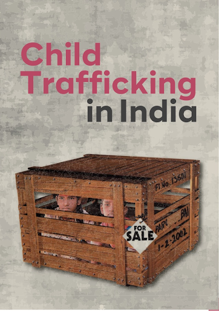
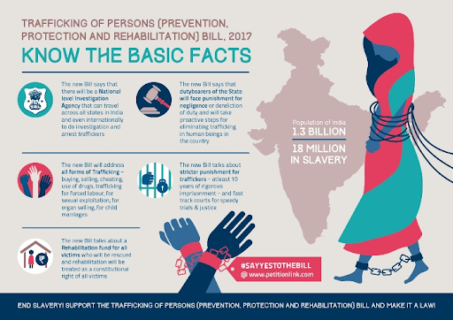
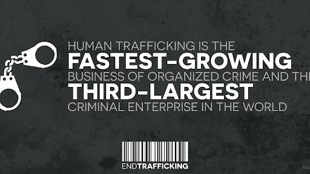

Woman and Child Trafficking-
India occupies the top spot in terms of the number of children and women being trafficked each year.
Human trafficking is a multi-billion dollar business and one of the fastest-growing illegal industries on the planet.
Some of the root causes of child trafficking in India are: poverty, lack of education, and the need to financially support their family.
Most are attracted to the jobs they are promised but none realise an evil thrives behind the veil of false help. In names of job and money children are pushed into forced protitution, slavery and labour.
Someone said facts speak the actual power of truth so here are some :
- Every year, 44,000 children fall into the clutches of gangs.
- In 2015, only 4,203 human trafficking cases were investigated in India.
- In 2014, 76% of all people trafficked in India were women and girls.
- Children make up roughly 40% of prostitutes.
- Only 10% of human trafficking in India is international, while 90% is interstate
So not only do we need to report but we also have to facilitate dissemination of information throughout our nation.